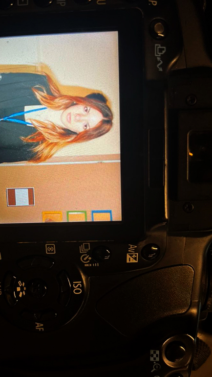
Follow the Turkish Ministry of Education high school curriculum
Relevant Courses: Mathematics, English, Foreign Languages Literature, Philosophy, Sociology, Theory of Knowledge, Visual Arts & Music, Turkish Language and Literature, Geography, History, and more
Distinctions: Received Honor Certificates throughout grades 9-11
Acted as the head of TAKEV's “Determined to Overcome Negative Tendencies” group, which is the school's first and only entirely student-led organisation
Ran awareness projects about addiction and harmful habits for teenagers throughout the year and organised an event to clean the streets of our school district
Took university-level courses exploring self-expression, integrating philosophical inquiry with artistic and interpersonal development
Travelled to Berlin, Germany for two weeks of camping to study and advance my German skills, participate in sports events, learn more about German culture and the sights and history of Berlin and make international connections with like-minded students
Focus on learning about and practicing traditional art, mainly using pencil, charcoal, water colours, and gouache
Plan to start working on 3D art with ceramics, foams and assorted metals
Hone in on finding my signature style and reflecting myself in my art by experimenting with different mediums and painting styles with tutoring from professionals who focus on promoting creativity
Attended the Pratt Summer School week in 2023, when we were instructed by Pratt Institute teachers in painting using various materials; honed my skills in ink works
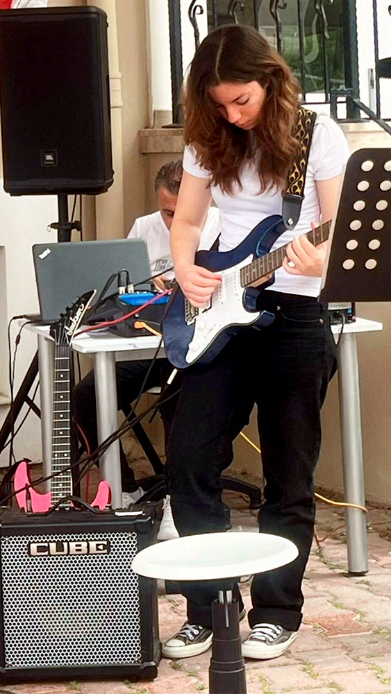
Take classical guitar lessons since 2021 and take part in the annual Guitar Recital of Cengiz Han Hıçkıran's Students (throughout 2021 to 2025, currently)
Earned University of West London Grade 1 (2023), 4 (2024) and 5 (2025) in classical guitar
Play the electric guitar with the school band in school celebrations and events
Completed an intensive two-week art program focusing on painting, photography, and design under the guidance of the Rome University of Fine Arts (RUFA) faculty
Developed a broader artistic perspective by exploring multiple creative disciplines and engaging with Italian art and culture firsthand
Collaborated with an international group of artists and students and visited sights in Rome
Took lessons and coaching on charcoal, paying specific attention to tone, shadow, and highlights
Studied how different university-level aptitude tests operate and how to prepare for them
Formerly licensed with the Göztepe Sailing Club (2021-2024) and EMR Windsurfing and Sailing Club (2018-2021) as a windsurfer
Competed and ranked high in various competitions, such as:
Registered volunteer for The Turkish Foundation for Combating Soil Erosion, for Reforestation and the Protection of Natural Habitats
Participated in the 10km 2024 Izmir Marathon and collected donations on behalf of EÇEV
Visited EÇEV institutions in Izmir to learn more about their various projects and pursuits
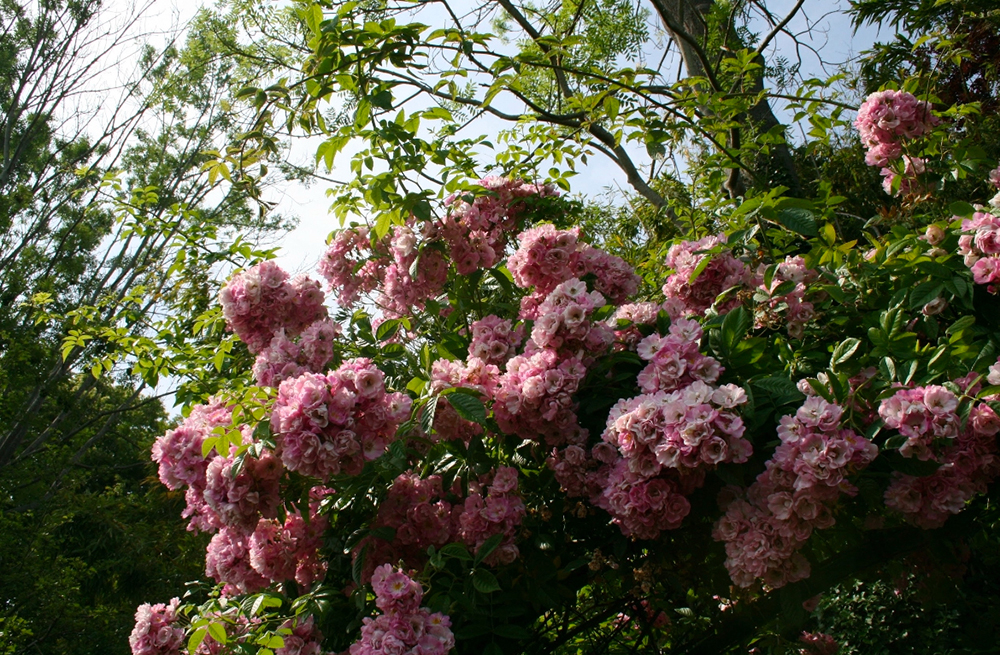
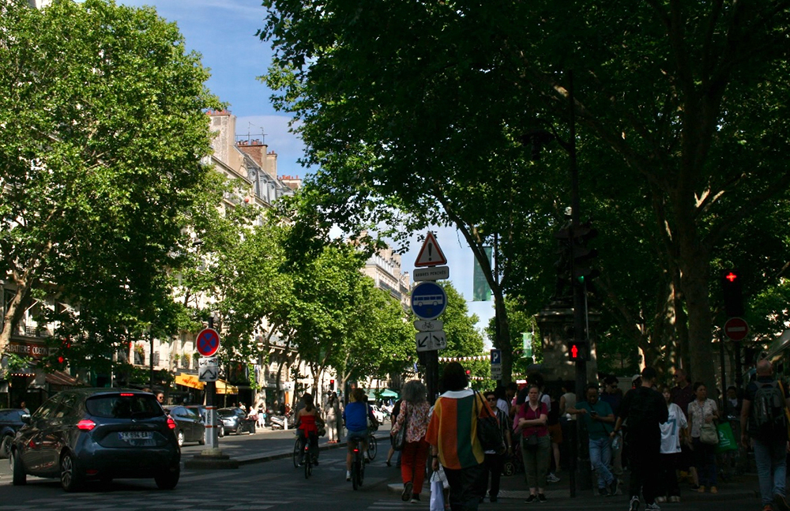
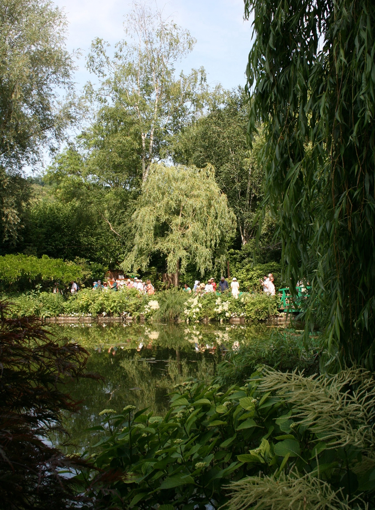
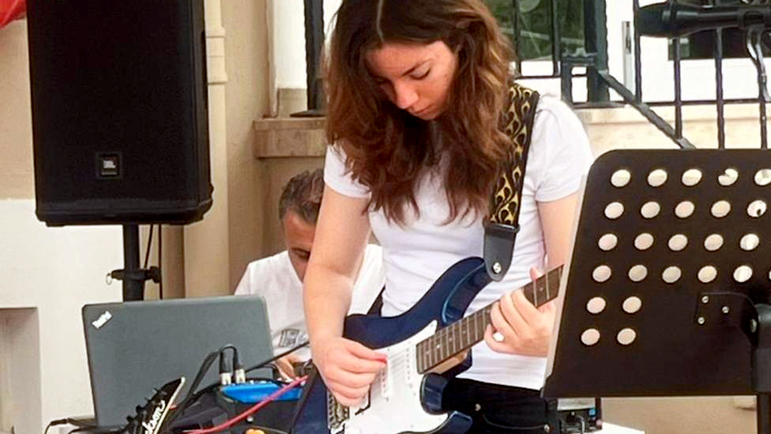
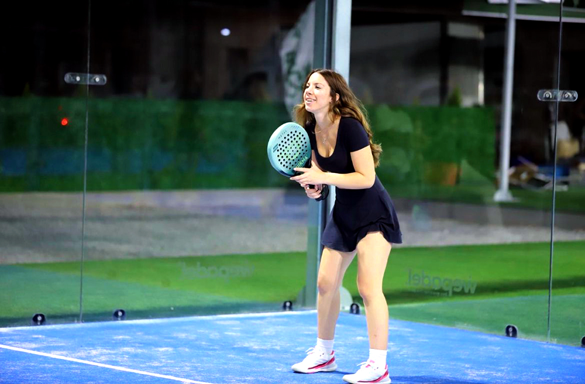
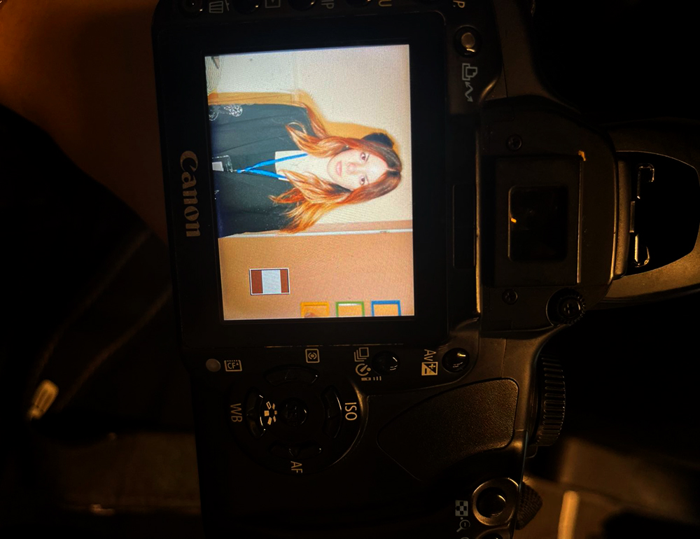
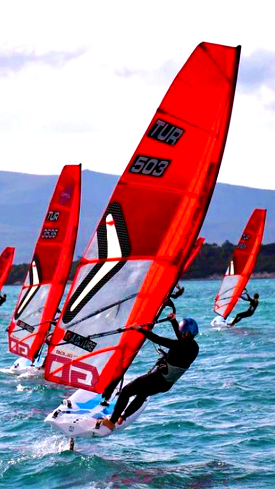
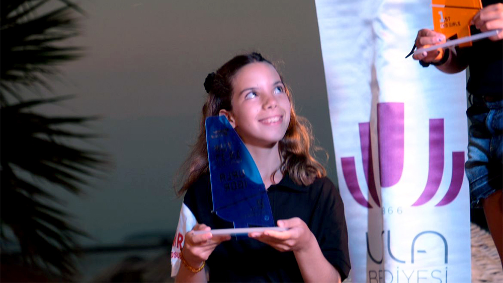
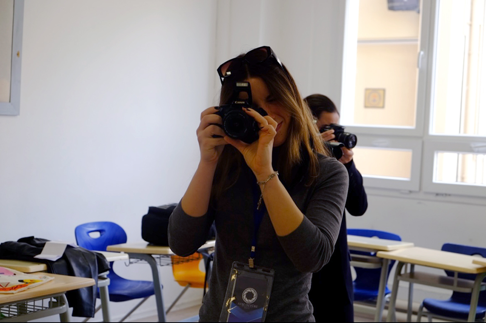